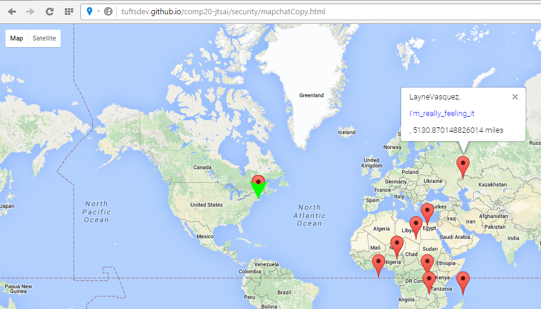

Jonathan Tsai
December 8, 2015
The purpose of this report is to assess and analyze the security in two products created by SBettigole. The first product, titled MapChat, displays on a Google Map all of the user checkins found in a database. This database is contained in the second product, which is a server-side application which handles the insertion of new user checkins and retrieval of checkin data. The MapChat product first determines the location of the user and then sends predetermined user checkin information to be stored in the database. Afterwards, the database returns all of the user checkins which are used to display all of the users in their corresponding locations on the map.
This report will detail any security related issues of the two products which may impact the intended functionality or privacy in terms of access for the products.
The applications were first tested with input formatted as intended to ensure that the entire product works as intended for ideal input. After this check, the applications were tested with non-ideal input, such as JavaScript code being sent as the message of the user checkin. This was performed using the curl tool to send checkin data directly to the server database. The functionality of the program with this non-ideal input was then observed. Additionally, a copy of the author's own MapChat application was used to determine if it was allowed to access the database server for SBettigole's application.
The server does not reject JavaScript code being given in the message field of the checkin, which allows for Cross-Site Scripting. This occurs in two places: the / GET page of the server app, and the MapChat map page. The server is also accessible by websites from different domains, so the data in the database can easily be accessed and tampered with by anyone.
Cross-site scripting is a serious problem because it affects pretty much every user that visits the page. If a user had sent in JavaScript code to be stored in the database, then when the page displays that data, the code actually runs. This may lead to unwanted behavior such as redirecting to another website.
When visiting the / GET page of the server application for MapChat, all of the checkins in the database are displayed on the page. However, if one of the values of the checkin is JavaScript code or even HTML code, it will run when the page tries to print it. This was found by intentionally entering HTML code as the value for the message field of the checkin. The problem can be seen in the screenshot below. The first image shows the insertion of the HTML code data while the second screenshot shows the effect of the data on the web page that displays it.
By checking the data to be inserted into the database for HTML code and stripping it of special characters such as '<' and '>', this would remove any functionality that it have produced if left unchanged. This will ensure that code is not stored into the database as code and will not perform any functions when displayed on a page.
As mentioned above, cross-site scripting can be problematic since it carries out some functionality on a web page even if it was unintended. This may affect the usability of the product.
This issue was found by visiting the MapChat map page after having inserted data containing HTML code into the server database. In this instance, the data inserted had a message value of:
To fix this issue, it is necessary to remove any HTML related characters from data before inserting into the server. As long as this is taken care of, then the data inserted into the database should not be able to function as HTML code when displayed.
The server application can be accessed by websites from a different origin. This means that other webpages can send and retrieve data from the database even if they were not intended to. This is a vulnerability relating to the privacy of the data which is easily accessible by outside sources. If the data was particularly important, then this would be a sever problem.
By examining the server application, it was discovered that there was no restriction on which websites could access it. So, a copy of the author's MapChat application was used to see if it could send and receive data from the server. It was able to interact with the same server because the markers displayed on the map were the same as those from SBettigole's MapChat. This can be seen in the image below.
This problem could be resolved by only allowing specific websites to have access to the server and be able to interact with it. This may mean that it is harder to use the server, but it should only be used for the specific applications that need it.
Although it works properly with correctly formatted input, the MapChat application contains security problems that may severely impact the usability of the product. One of the major problems is Cross-Site scripting (XSS), but this can easily be fixed by simply checking and removing HTML related characters from data before inserting into the server. One other significant problem, being able to access and interact with the server from a different origin, can be fixed by specifying individual websites to have access. The costs associated with these fixes are quite minimal since they only require some modifications to the code running these products. In general, it is important to prevent and handle these issues because they may hinder the functionality of the product.